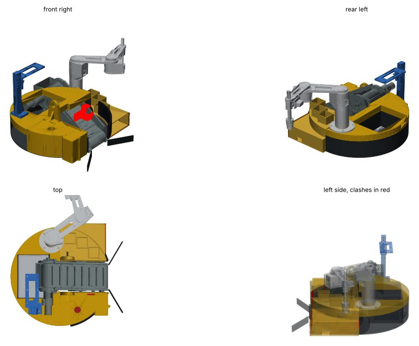
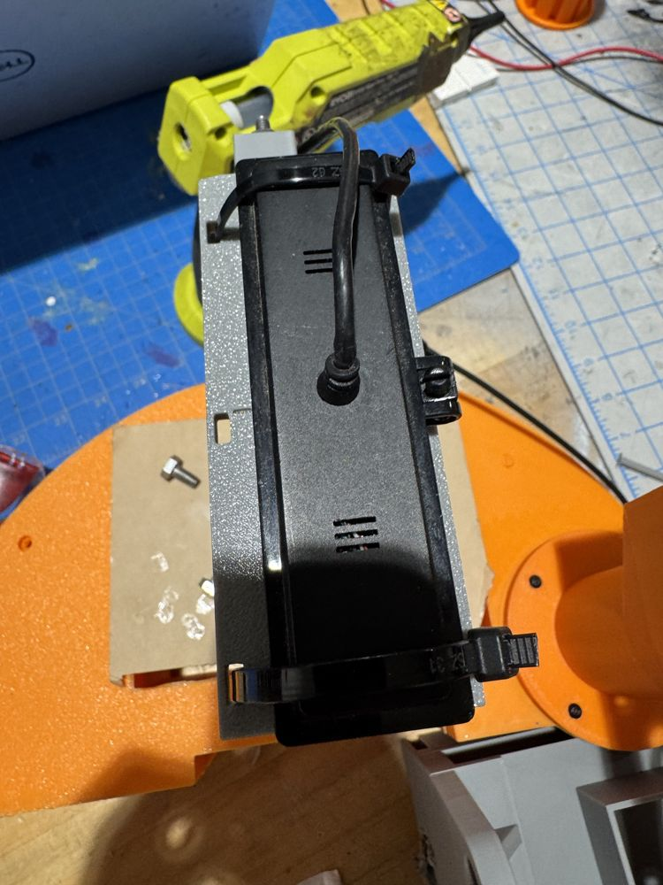
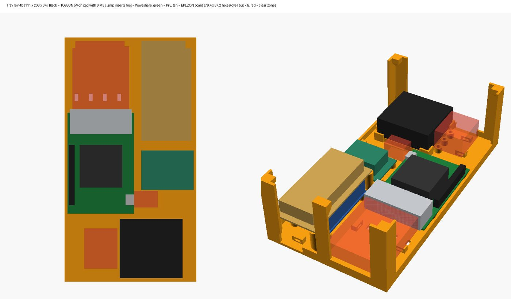
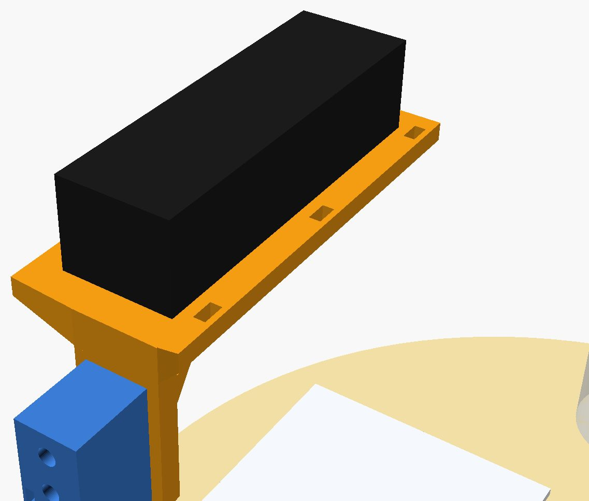

Project Magpie
MagPick MP-340: a 340 mm round robot that sweeps loose steel fasteners off the floor with magnets, lifts them on a cleated belt onto a backlit pick plate, and sorts screws, nuts and washers into bins with a camera-guided SCARA arm running on a Raspberry Pi 5.


Clean up and sort loose hardware automatically
Dropped screws, nuts and washers end up scattered across workshop floors and mixed together in bins. Picking them up and sorting them by hand is slow. The goal was a small mobile robot that collects steel fasteners on its own and drops each one into the right bin.
The robot splits the job into three stages: a magnetic belt collects parts from the floor, a backlit plate spreads them out so a camera sees each one as a clear dark shape, and a SCARA arm with an electromagnet gripper picks each part and drops it into its bin.
From floor to bin
What I designed
SCARA Picker Arm (v2)
Two Feetech STS3215 bus servos (shoulder and elbow), each joint carried by a 6805 bearing so the servo sees no bending load. A micro servo drives a rack-and-pinion lift with about 39 mm of stroke, and a 12 V holding electromagnet is the gripper. v2 fixed v1's elbow walls, which the bearing bore had cut to under 1 mm, and added open servo pockets, cable windows and built-in horn-screw pilot holes.
Magnetic Belt Conveyor (Rev C)
An 80 mm cleated belt on a 33° incline. A fixed core of 15 N52 magnets inside a turning drum pulls parts off the floor; 18 more under the belt hold them while the cleats lift. The magnets stop 30 mm before the head pulley, so parts let go and slide down a ramp onto the pick plate. A field model sized the layout: 4–12× part weight at the floor, at least 30× around the drum.
Electronics Tray & Wedge Bay (v4)
A drawer that slides into a bay in the left body wedge with 1.0 mm clearance all round, holding the Pi 5, the 5 V buck converter, the servo bus adapter and a perfboard on heat-set insert posts. Four revisions, each driven by a measured board or a fit problem on the printed part.


Pixels to joint angles
A teammate wrote the vision app, which finds each fastener on the lit plate and reports its type and size. My side turns that into motion: cv_bridge.py converts pixels to arm millimetres from a calibration, scara_picker.py solves inverse kinematics and plans paths around keep-out zones (conveyor, belt motor and drop ramp), and arm_api.py drives the servos, lowers the lift, switches the magnet and carries the part to its bin.
Bench tools (servo_bench.py, arm_bench.py) scan the servo bus, zero the arm and trace test squares and circles. conveyor.py runs the belt motor with ramps and a jam watchdog that backs the belt off. A simulated servo bus lets the whole pipeline run with no hardware.
Where it stands
- Chassis printed in PETG
- SCARA arm v2 printed and assembled
- Arm zeroed on the Pi; both servos read back within 2°
- Lift servo running on the bench
- Magnetic conveyor Rev C (all clash checks clear; arm keeps 297/297 pick points)
- Electronics tray v4 and left wedge bay
- Camera stand
- Fit the lift pinion and tune its travel
- Mount the camera and calibrate pixels to arm coordinates
- Teach the bins, then a dry pick run
- Build the conveyor; add the magnet and battery